Here's an example of the R function c() that we can use to concatenate values into a vector or a list.
x <- c(1, 3, 2, 5)
x
## [1] 1 3 2 5
x <- c(1, 6, 2)
x
## [1] 1 6 2
y <- c(1, 4, 3)
We can check the length of a vector or list with the length() function.
length(x)
## [1] 3
length(y)
## [1] 3
x + y
## [1] 2 10 5
To get a list of all objects in the current environment we use the ls() function. Objects can be removed from the environment with the rm() function.
ls()
## [1] "reinstall_rgitbook" "x" "y"
rm(x, y)
ls()
## [1] "reinstall_rgitbook"
To remove all objects from the environment, we first get the list of all objects with the ls() function, and pass this list to the rm() function.
rm(list = ls())
To get help on any function, we can use the ? operator.
?matrix
A matrix is defined using the matrix() function.
x=matrix(data=c(1,2,3,4), nrow=2, ncol=2)
x
## [,1] [,2]
## [1,] 1 3
## [2,] 2 4
When calling a function in R, positional arguments can be speficied without the names of the arguments as shown below. Note that the resulting matrix is identical to the one in the previous call to matrix()
x <- matrix(c(1, 2, 3, 4), 2, 2)
x
## [,1] [,2]
## [1,] 1 3
## [2,] 2 4
Finally, we can also tell the matrix() function whether the data provided are in row-order or column-order. The following example shows, matrix creation with data in row-order.
matrix(c(1, 2, 3, 4), 2, 2, byrow = TRUE)
## [,1] [,2]
## [1,] 1 2
## [2,] 3 4
We can take the square-root of each element of the matrix with the sqrt() function and use the ^ operator raise each element of the matrix to a power.
sqrt(x)
## [,1] [,2]
## [1,] 1.000000 1.732051
## [2,] 1.414214 2.000000
x^2
## [,1] [,2]
## [1,] 1 9
## [2,] 4 16
The rnorm() function can be used to generate random numbers. In the following example, we use rnorm() to generate a vector of 50 random numbers.
x <- rnorm(50)
y <- x + rnorm(50, mean = 50, sd = 0.1)
cor(x, y)
## [1] 0.9940236
To get consistent results from repeated calls to rnorm(), we use the set.seed().
set.seed(1303)
rnorm(50)
## [1] -1.1439763145 1.3421293656 2.1853904757 0.5363925179 0.0631929665
## [6] 0.5022344825 -0.0004167247 0.5658198405 -0.5725226890 -1.1102250073
## [11] -0.0486871234 -0.6956562176 0.8289174803 0.2066528551 -0.2356745091
## [16] -0.5563104914 -0.3647543571 0.8623550343 -0.6307715354 0.3136021252
## [21] -0.9314953177 0.8238676185 0.5233707021 0.7069214120 0.4202043256
## [26] -0.2690521547 -1.5103172999 -0.6902124766 -0.1434719524 -1.0135274099
## [31] 1.5732737361 0.0127465055 0.8726470499 0.4220661905 -0.0188157917
## [36] 2.6157489689 -0.6931401748 -0.2663217810 -0.7206364412 1.3677342065
## [41] 0.2640073322 0.6321868074 -1.3306509858 0.0268888182 1.0406363208
## [46] 1.3120237985 -0.0300020767 -0.2500257125 0.0234144857 1.6598706557
The functions mean(), var(), and sd() can be used to calculate the mean, variance and standard deviation of a vector.
set.seed(3)
y <- rnorm(100)
mean(y)
## [1] 0.01103557
var(y)
## [1] 0.7328675
sqrt(var(y))
## [1] 0.8560768
sd(y)
## [1] 0.8560768
Basic plotting functionality is provided by the plot() function in R. The following example shows how to produce a scatter plot and how to label the x and y axis.
x <- rnorm(100)
y <- rnorm(100)
plot(x, y)
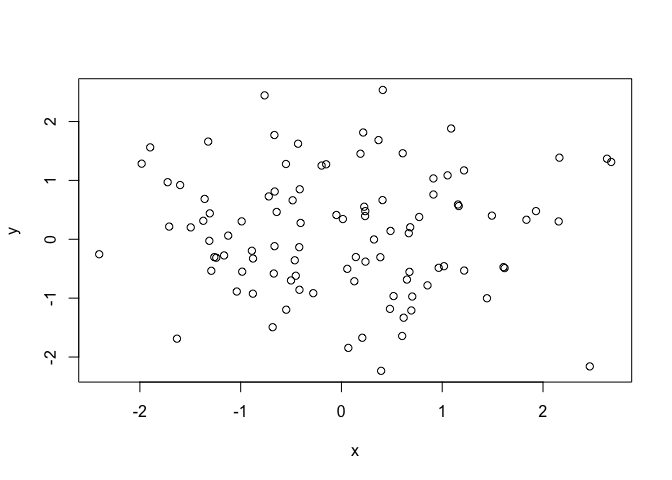
plot(x, y, xlab = "this is the x-axis", ylab = "this is the y-axis", main = "Plot of X vs Y")
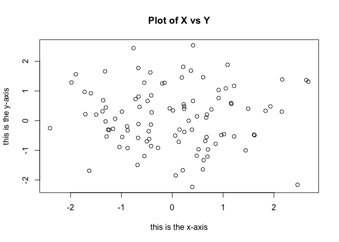
We can save the plots generated in R to a file in PDF format, or to a graphics image format such as JPEG or PNG. In the following example, we use the pdf() function to create a PDF file called Figure.pdf.
pdf("Figure.pdf")
plot(x, y, col = "green")
dev.off()
## quartz_off_screen
## 2
To generate sequence of numbers, we can call the seq() function.
x <- seq(1, 10) > x
x <- 1:10
x
## [1] 1 2 3 4 5 6 7 8 9 10
x <- seq(-pi, pi, length = 50)
Contour plots can be created in R with the contour() function.
y <- x
f <- outer(x, y, function(x, y) cos(y)/(1 + x^2))
contour(x, y, f)
contour(x, y, f, nlevels = 45, add = T)
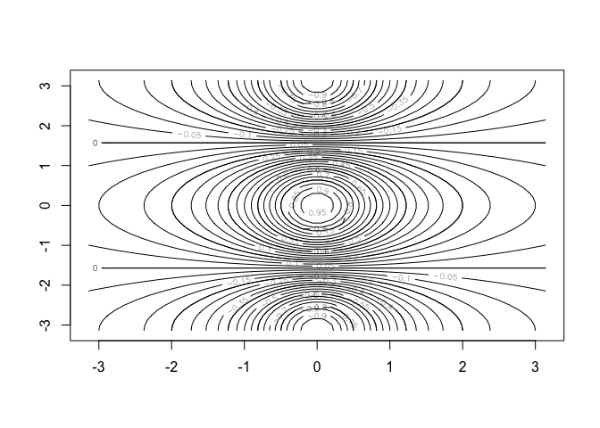
fa <- (f - t(f))/2
contour(x, y, fa, nlevels = 15)
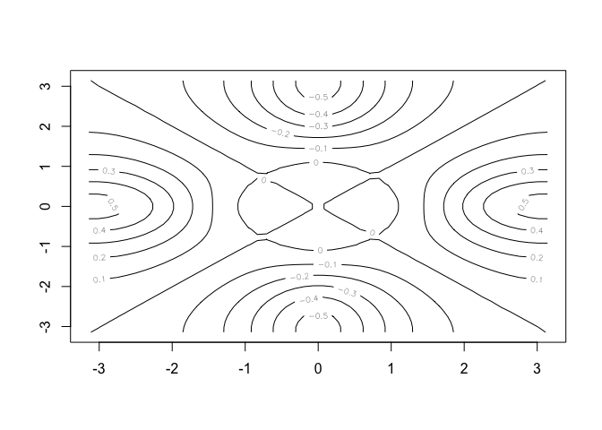
Heatmaps can be generated with the image() function.
image(x, y, fa)
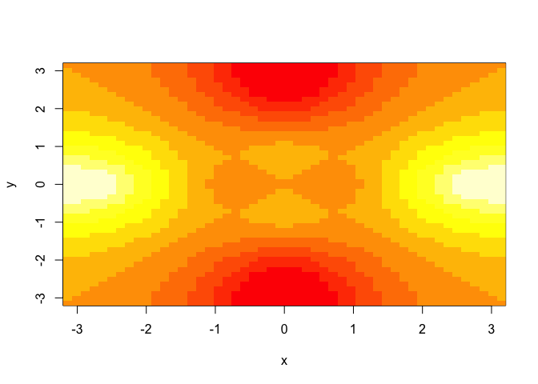
Perspective plots of a three-dimentional surface are plottted using the persp() function.
persp(x, y, fa)
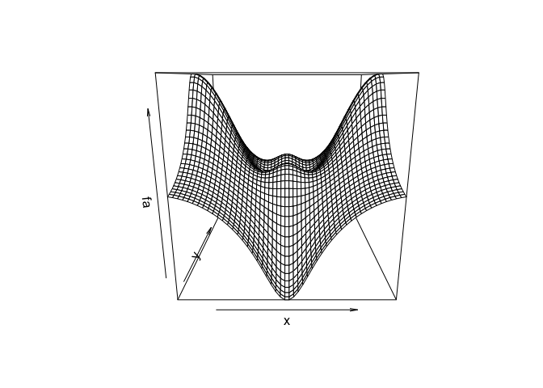
persp(x, y, fa, theta = 30)
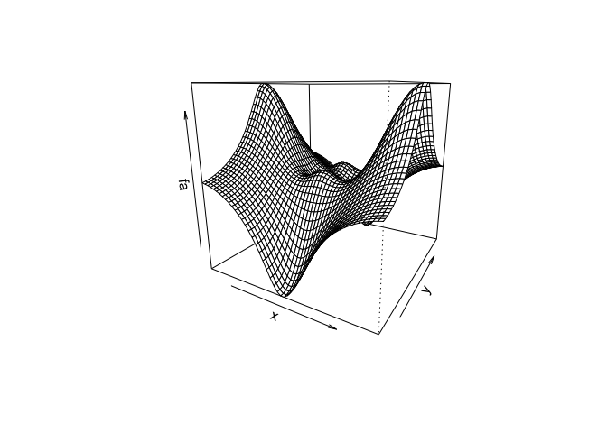
persp(x, y, fa, theta = 30, phi = 20)
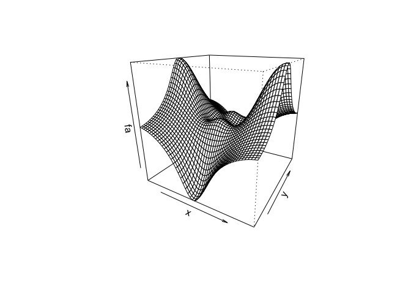
persp(x, y, fa, theta = 30, phi = 70)
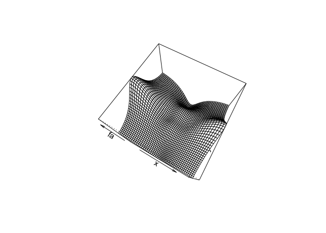
persp(x, y, fa, theta = 30, phi = 40)
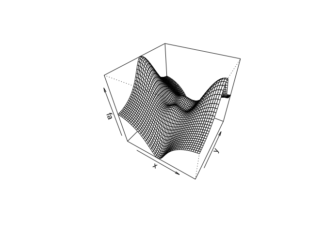
Indexing elements of a vector or a matrix is done using the square-brackets [ and ]. In this example we create a 4x4 matrix and then index the element at row 2, column 3.
A <- matrix(1:16, 4, 4)
A
## [,1] [,2] [,3] [,4]
## [1,] 1 5 9 13
## [2,] 2 6 10 14
## [3,] 3 7 11 15
## [4,] 4 8 12 16
A[2, 3]
## [1] 10
We can also select multiple rows or columns at once by providing the row or the column indices as vectors instead of single integers.
A[c(1, 3), c(2, 4)]
## [,1] [,2]
## [1,] 5 13
## [2,] 7 15
A[1:3, 2:4]
## [,1] [,2] [,3]
## [1,] 5 9 13
## [2,] 6 10 14
## [3,] 7 11 15
A[1:2, ]
## [,1] [,2] [,3] [,4]
## [1,] 1 5 9 13
## [2,] 2 6 10 14
A[, 1:2]
## [,1] [,2]
## [1,] 1 5
## [2,] 2 6
## [3,] 3 7
## [4,] 4 8
If a row or column index is omitted, then R assumes that we're looking for all rows or all columns.
A[1, ]
## [1] 1 5 9 13
To exclude certain elements, we can use the negative sign - before the index.
A[-c(1, 3), ]
## [,1] [,2] [,3] [,4]
## [1,] 2 6 10 14
## [2,] 4 8 12 16
A[-c(1, 3), -c(1, 3, 4)]
## [1] 6 8
The dim() can be used to show the dimensions of a vector or a matrix.
dim(A)
## [1] 4 4
The read.table() and read.csv() functions are used to import data from a file into R.
Auto <- read.table("http://www-bcf.usc.edu/~gareth/ISL/Auto.data")
head(Auto)
## V1 V2 V3 V4 V5 V6 V7 V8
## 1 mpg cylinders displacement horsepower weight acceleration year origin
## 2 18.0 8 307.0 130.0 3504. 12.0 70 1
## 3 15.0 8 350.0 165.0 3693. 11.5 70 1
## 4 18.0 8 318.0 150.0 3436. 11.0 70 1
## 5 16.0 8 304.0 150.0 3433. 12.0 70 1
## 6 17.0 8 302.0 140.0 3449. 10.5 70 1
## V9
## 1 name
## 2 chevrolet chevelle malibu
## 3 buick skylark 320
## 4 plymouth satellite
## 5 amc rebel sst
## 6 ford torino
The read.table() and read.csv() family of functions offer a number of options for controlling how the data are imported, such as control over header rows, blank rows, or missing values.
Auto <- read.csv("http://www-bcf.usc.edu/~gareth/ISL/Auto.csv", header = T, na.strings = "?")
head(Auto)
## mpg cylinders displacement horsepower weight acceleration year origin
## 1 18 8 307 130 3504 12.0 70 1
## 2 15 8 350 165 3693 11.5 70 1
## 3 18 8 318 150 3436 11.0 70 1
## 4 16 8 304 150 3433 12.0 70 1
## 5 17 8 302 140 3449 10.5 70 1
## 6 15 8 429 198 4341 10.0 70 1
## name
## 1 chevrolet chevelle malibu
## 2 buick skylark 320
## 3 plymouth satellite
## 4 amc rebel sst
## 5 ford torino
## 6 ford galaxie 500
dim(Auto)
## [1] 397 9
Auto[1:4, ]
## mpg cylinders displacement horsepower weight acceleration year origin
## 1 18 8 307 130 3504 12.0 70 1
## 2 15 8 350 165 3693 11.5 70 1
## 3 18 8 318 150 3436 11.0 70 1
## 4 16 8 304 150 3433 12.0 70 1
## name
## 1 chevrolet chevelle malibu
## 2 buick skylark 320
## 3 plymouth satellite
## 4 amc rebel sst
Auto <- na.omit(Auto)
dim(Auto)
## [1] 392 9
We can get a list of all variables in the dataset we imported with the names() function.
names(Auto)
## [1] "mpg" "cylinders" "displacement" "horsepower"
## [5] "weight" "acceleration" "year" "origin"
## [9] "name"
There are two ways to reference a variable from a dataset. The first uses the $ symbol to tell R that the variable cylinders is from the Auto dataset.
plot(Auto$cylinders, Auto$mpg)
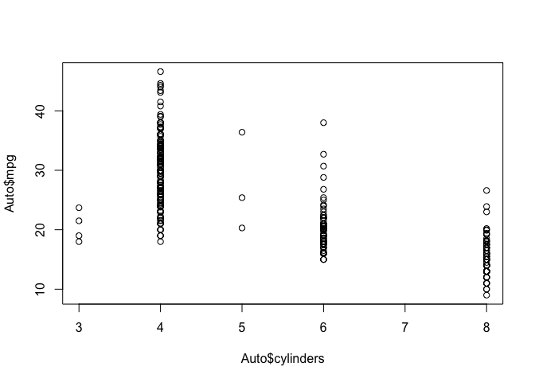
The second method uses the attach() function which tells R to search for variable names in the Auto dataset.
attach(Auto)
plot(cylinders, mpg)
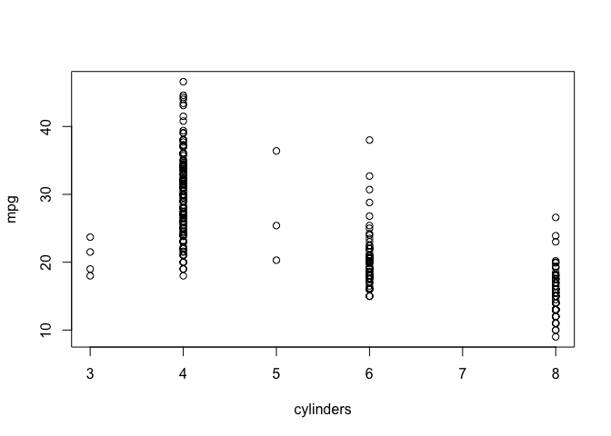
We can convert quantitative variables to qualitative or categorical variables with the as.factor() function.
cylinders <- as.factor(cylinders)
Catrgotrical variables are automatically plotted as box-plots by R.
plot(cylinders, mpg)
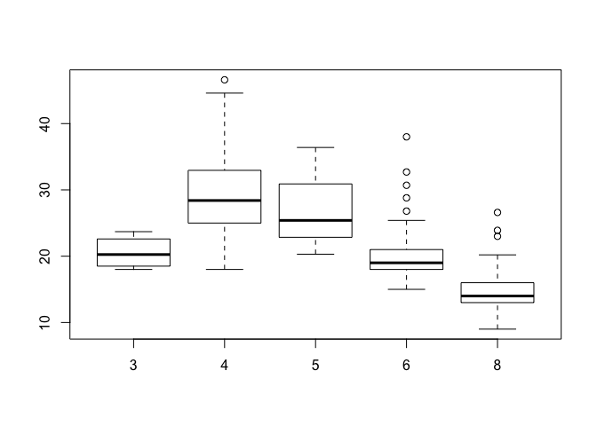
plot(cylinders, mpg, col = "red")
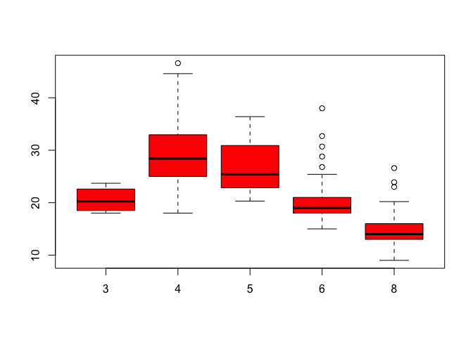
plot(cylinders, mpg, col = "red", varwidth = T)
plot(cylinders, mpg, col = "red", varwidth = T, horizontal = T)
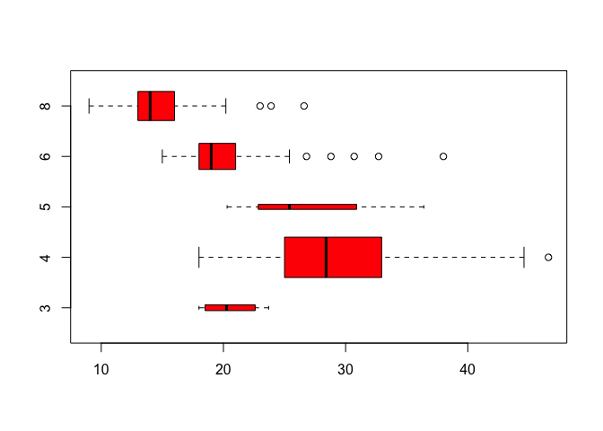
plot(cylinders, mpg, col = "red", varwidth = T, xlab = "cylinders", ylab = " MPG ")
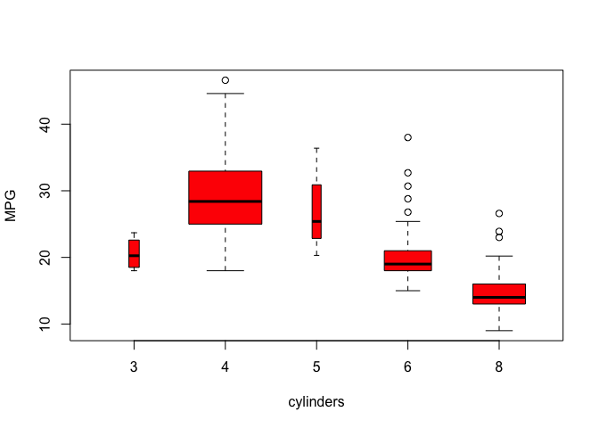
We can also get a hsitogram of the data with the hist() function.
hist(mpg)
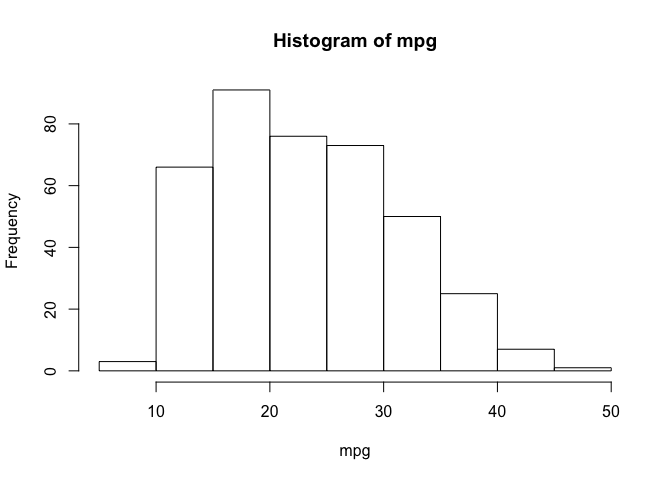
hist(mpg, col = 2)
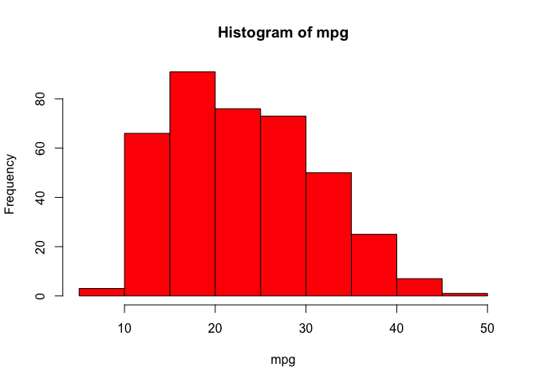
hist(mpg, col = 2, breaks = 15)
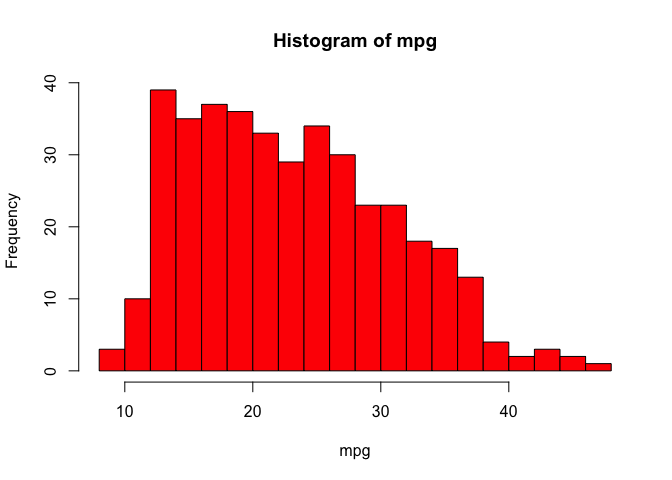
To generate a matrix of scatterplots, we can use the pairs()
pairs(Auto)
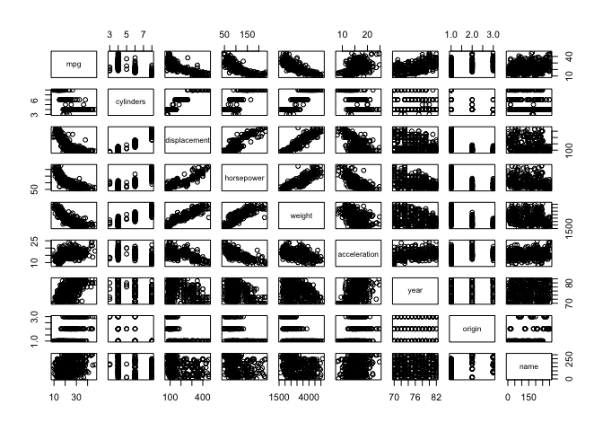
pairs(~mpg + displacement + horsepower + weight + acceleration, Auto)
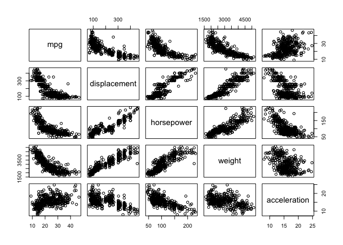
The identify() function can be used to identify specific points on a plot. In an interactive session in R-Studio, identify() allows you to click on specific points and labels them on screen for convenient identification.
plot(horsepower, mpg)
identify(horsepower, mpg, name)
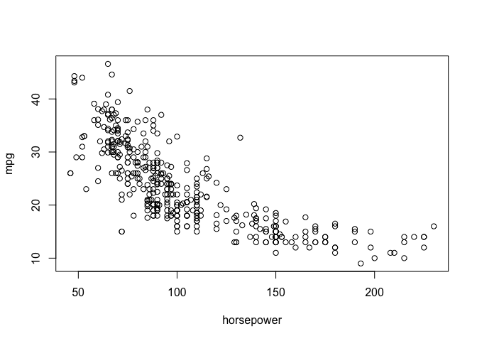
## integer(0)
The summary() function can be used to print a summary of the dataset.
summary(Auto)
## mpg cylinders displacement horsepower
## Min. : 9.00 Min. :3.000 Min. : 68.0 Min. : 46.0
## 1st Qu.:17.00 1st Qu.:4.000 1st Qu.:105.0 1st Qu.: 75.0
## Median :22.75 Median :4.000 Median :151.0 Median : 93.5
## Mean :23.45 Mean :5.472 Mean :194.4 Mean :104.5
## 3rd Qu.:29.00 3rd Qu.:8.000 3rd Qu.:275.8 3rd Qu.:126.0
## Max. :46.60 Max. :8.000 Max. :455.0 Max. :230.0
##
## weight acceleration year origin
## Min. :1613 Min. : 8.00 Min. :70.00 Min. :1.000
## 1st Qu.:2225 1st Qu.:13.78 1st Qu.:73.00 1st Qu.:1.000
## Median :2804 Median :15.50 Median :76.00 Median :1.000
## Mean :2978 Mean :15.54 Mean :75.98 Mean :1.577
## 3rd Qu.:3615 3rd Qu.:17.02 3rd Qu.:79.00 3rd Qu.:2.000
## Max. :5140 Max. :24.80 Max. :82.00 Max. :3.000
##
## name
## amc matador : 5
## ford pinto : 5
## toyota corolla : 5
## amc gremlin : 4
## amc hornet : 4
## chevrolet chevette: 4
## (Other) :365
summary(mpg)
## Min. 1st Qu. Median Mean 3rd Qu. Max.
## 9.00 17.00 22.75 23.45 29.00 46.60